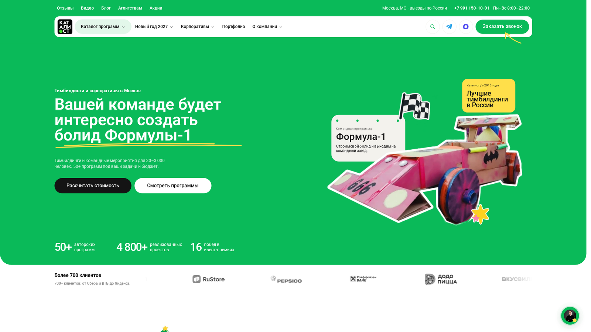
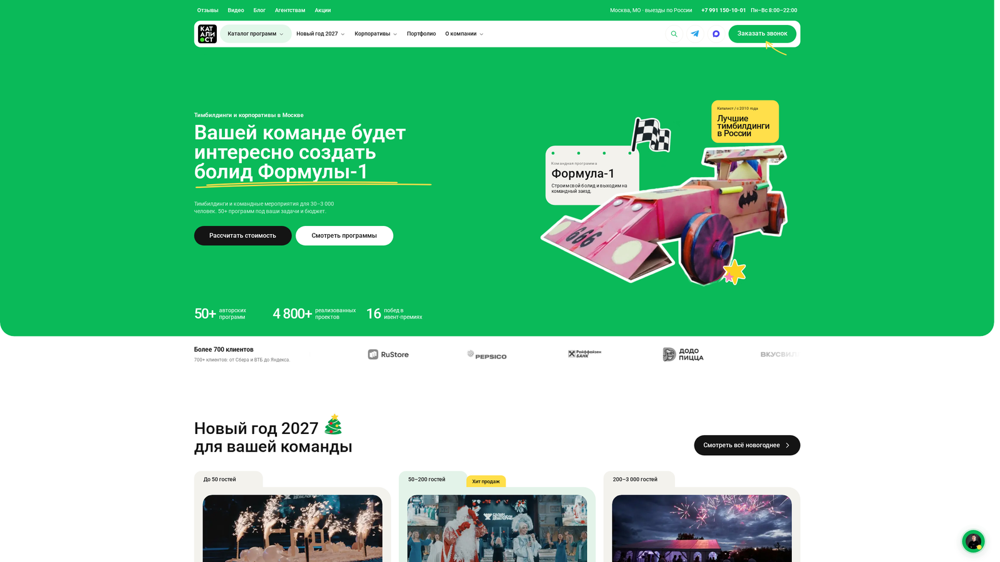

Снято headless Chrome 15.11.2026, только видимая область, без прокрутки. Снимки 1920 и 2560 уменьшены до 1600 px по ширине, цифры ниже измерены на реальном размере.


| Окно | Устройство | Левый отступ заголовка | Картинка героя, ширина×высота | Доля картинки от окна | Ширина контента героя | max-width контента |
|---|---|---|---|---|---|---|
| 1280×800 | MacBook Air 13 | 24 px | 445×500 | 35% | 1217 px | 1552 px |
| 1440×900 | MacBook 14/15 | 24 px | 503×566 | 35% | 1377 px | 1552 px |
| 1536×864 | типовой ноутбук Windows | 24 px | 512×576 | 33% | 1473 px | 1552 px |
| 1920×1080 | офисный монитор | 176 px | 540×608 | 28% | 1552 px | 1552 px |
| 2560×1440 | широкий монитор, как у Маши | 496 px | 540×608 | 21% | 1552 px | 1552 px |
| 390×844 | iPhone | 24 px | 158×154 | 41% | 342 px | 650 px |
Заголовок: крупный (52 px) блок «Вашей команде будет…», колонка текста 650 px. Над ним мелкая надпись «Тимбилдинги и корпоративы в Москве» (она в теге h1) стоит на том же отступе. Картинка героя = блок со стикерами, в нём ротируются слайды.
Контент героя ограничен 1552 px и стоит по центру. До 1600 px окна он растягивается (отступ по краям 24 px, картинка растёт 445 → 540 px). Дальше растёт только пустота по бокам: 177 px на 1920 и 497 px на 2560.
Картинка перестаёт расти на 540 px. Доля от окна: 35% на 1280 и 1440, 33% на 1536, 28% на 1920, 21% на 2560. На широком мониторе она вдвое мельче, чем на MacBook, а размер заголовка (52 px) не меняется нигде.
Композиция разваливается с ширины около 1600 px. До этого заголовок и картинка заполняют экран. После текст 650 px слева и картинка 540 px справа расходятся внутри контейнера 1552 px, между ними пустой промежуток 300 px и больше, а зелёный фон тянется на всю ширину. Заголовок при этом не прижат к краю окна, а стоит в центрированной колонке. Но на 2560 он занимает 24% ширины экрана, поэтому выглядит прижатым влево и картинка кажется мелкой.
На iPhone 390 всё в одну колонку, отступ 24 px, картинка 158 px (41%): здесь проблем не видно.
Способ 1. Сузить и сблизить. Оставить контейнер 1552 px по центру, но поставить текст и картинку в одну группу по центру (flex, justify-content: center, gap 80 px) вместо разведения по краям. Плюс: простое изменение CSS, на 1920 и 2560 группа выглядит цельно. Минус: по бокам по-прежнему пустое зелёное поле.
Способ 2. Масштабировать от ширины окна. Картинку и заголовок задать через clamp() от ширины окна: например картинка clamp(445px, 28vw, 820px), заголовок clamp(52px, 3.4vw, 76px), контейнер героя расширить до 1920 px. Плюс: на 2560 доля картинки возвращается к 30% и больше, герой заполняет экран как на MacBook. Минус: нужна картинка в большем разрешении (сейчас файл mobile.webp) и перепроверка всех слайдов и отступов 140 px.
Рекомендация: способ 2 для картинки и заголовка, способ 1 как запасной. Первый быстрее, второй решает именно «мелкую картинку».